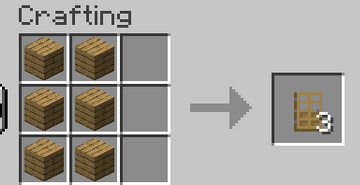

mesa de crafteo con 6
mesa de crafteo con 6  tablones.
tablones.
La puerta es un bloque usado en las construcciones para cerrar la entrada.
La puerta se consigue en una mesa de crafteo con 6 tablones.

También se puede conseguir en diversas estructuras.
 Hacha de cualquier material
Hacha de cualquier material